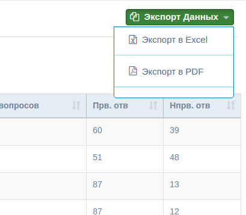

Доступ к Разделу имеют только пользователи с разрешением
"Управление-Отчетами".
1. Вывод отчетов по результатам.
Пройдите по нижеуказанной ссылке (Меню --> ТОтчеты -->
Результаты Тестирования):
а. Общий отчет результатов (все пользователи)
Данный раздел выводит список пользователей и результаты
тестирования.(можно сделать поиск по конкретному участнику).
Нажмите на Детализацию для просмотра полных данных о результатах
участника
б. Полные (детализированные) результаты
Данный раздел выводит общие результаты и детализацию по вопросам
в. Экспорт данных в XLS или PDF
Для экспорта отчетов выберите формат по нижеуказанной
ссылке
